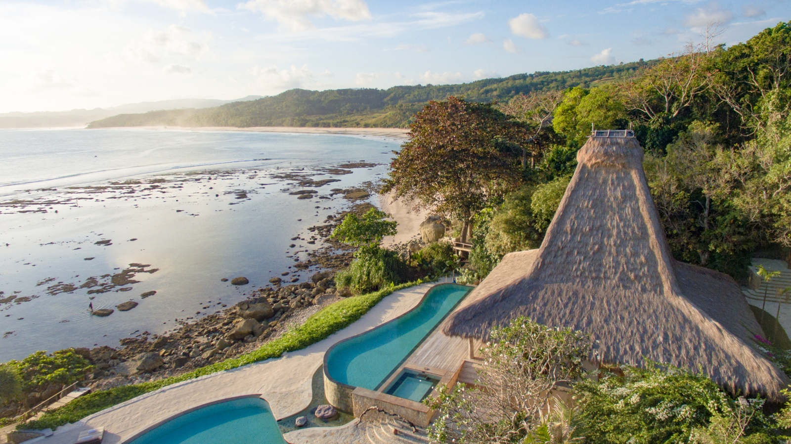
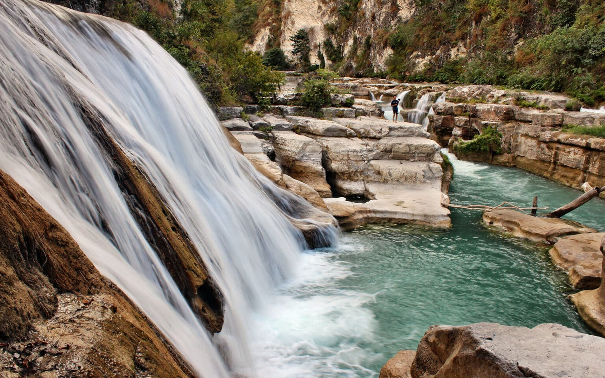

Nihiwatu
Edge Of Wildness™ Made in Indonesia
Rated the number one hotel in the world by Travel & Leisure Magazine in 2016, Nihiwatu is a resort made up of private, traditionally-thatched villas spread along the island of Sumba, just an hour’s flight from Bali. Travelers can choose to stay in a range of different rooms from family-sized villas all the way up to the “owner’s estate,” which has its own library and kitchen! Marangga villas include four-poster beds, infinity pools, a bed, and loungers overlooking the stunning beach. All are furnished with teak pieces and muted fabrics. Nihiwatu hires nearly 400 staff for just 28 villas, and guests even have the option of a personal butler! To say you’ll be well taken care of is an understatement
Nihiwatu’s spa pavilions overlook the sandy beaches and crisp waters. Choose to relax with the Sumbanese Dream treatment, combined therapy of a mineral-rich foot bath, massage, lavender scrub, and aloe-infused body mask. Seeking an adventure with your significant other? Book the Nihi Oka Spa Safari, where guests are taken on a journey to a secluded valley where couples’ treatment rooms can be found. Pick one of the many aromatic homemade oils and relax with a massage, complete with views of the rolling green paddy fields.
The Story Of NIHI Sumba EDGE OF WILDNESS™
A rare and fascinating tale that began when Sumba’s ancestors, the ‘Marapu,’ landed on its secluded beach centuries ago. Beliefs about their powers vary, but the Marapu spirit has remained a benevolent force on the island, protecting the way of life and attracting custodians whom honor and carry forth the heritage and stories of the Sumbanese people, past and present. The same beach attracted Claude and Petra Graves in 1988, in search of the perfect wave. From this adventure emerged a vision to create a resort that would preserve and share the breathtaking beauty of Sumba with those who would truly appreciate it. The beach of Nihiwatu, meaning “mortar stone,” was named by early settlers for its isolated rock formation along the tide. The Graves aptly called the resort Nihiwatu for its surrounding legacy. By 2012, stories of the unregulated freedom and beauty of Nihi reached renowned brand-building American entrepreneur Christopher Burch, who was told Claude was looking for help to expand the resort. Burch called on a friend from New York’s The Carlyle Hotel—South African-born hotelier James McBride, who was President of YTL Hotels in Singapore at the time—to visit Sumba. Later that year, Burch’s trip with his three sons proved to be a milestone, as he acquired NIHI in partnership with McBride. The acquisition enabled substantial investment with the single priority to evolve Nihi into one of the best resorts in the world, an example of a sustainable operation in harmony with the environment and the Sumbanese people. Travel + Leisure readers globally have voted NIHI as the number one hotel in the world, in all categories, for 2016 & 2017 World’s Best Awards.
Tanggedu Waterfall
Tanggedu is just one of the many hidden paradises on Sumba Island.
Tanggedu Waterfall or called the Grand Canyon of East Sumba by the visitors is a waterfall that lies in Tanggedu Village, Kanatang District, East Sumba Regency, East Nusa Tenggara Province. It has a characteristic form of rock relief that is very unique. This waterfall is less than 46 km north of the Waingapu city.
To reach the Tanggedu Waterfall, tourists can use two or four-wheeled vehicles which will cross Mondu Village and Prainatang traditional village. It takes about 1.5 hours if depart from the City of Waingapu.
Along the way to the waterfall spot, tourists will see amazing view of savanna, traditional houses and also some of king’s graveyard. Tanggedu is just one of the many hidden paradise in Sumba Island. However, the road access to this place is not good enough and tourists have to park their vehicles in the homes of local residents and continue the journey by walking about 2.5 km to the waterfall spot.
Arriving at Tanggedu area, tourists will be greeted with beautiful panorama of the Grand Canyon. It is called Grand Canyon of east Sumba or Twin Canyon in East Sumba because the rock cliffs and the water flow are very similar to Grand Canyon in Arizona, United States of America.
What makes it special?
Steve sprained his ankle during our trip and decided not to come to Tanggedu waterfall and stay at the hotel which was such a shame. To be honest, this was one of the best things to do in Sumba because it really is a very breathtaking water fall to visit. \ This Sumba waterfall is more like a series of waterfalls in the middle of a canyon. I’ve seen a lot of waterfalls in my time and this one really is something else. The photos I have seen of it do not do it justice. Honestly, it’s my favourite waterfall I saw in Sumba (and they are all amazing). There are plenty of photo opportunities here and it honestly feels like a different world, even after a long journey to get here. When I sat in the above photo for a while, it made me tear up because I just felt a really strong energy here.
Waikelo

The Waikelo Sawah Waterfall is located in Sumba Island, an island of East Nusa Tenggara Province, one of three provinces of the Lesser Sunda Island. It was built in 1976 and initially proposed as a hydroelectric power plant, which was the first on the island. Now, the waterfall has also become a destination for tourism for both the locals and foreigners.
As suggested by the name, the waterfall is surrounded by sawah or rice field. As a result, the waterfall has another function for the people: helping the rice field with its irrigation. This massively helps the local farmers there, as they make most of their living from the rice field’s harvests.
The Waterfall’s Location and Route
In order to reach the waterfall, one has to take a rental vehicle or book travel, as the public transportation such as train or bus is unfortunately not accommodated there. The waterfall is only 12 km away from Tambolaka, the capital city of the Southwest Sumba District.
If you’re arriving at the island from the airport, it should take around 40 minutes to take you to the waterfall, provided the traffic is clear. Don’t worry about the journey being uncomfortable as the road to the place is fully paved and is routinely checked by locals. Set your GPS to Waikabubak, capital city of West Sumba District, as the waterfall will be passed through by using that route.
The Waterfall’s Beauties and Sceneries
Within the waterfall, there is an exotic cave. The waterfall’s spring comes directly from the cave. From the cave, the water continues to flow downwards until it reaches the rice field for irrigation. During certain times, especially during the rainy season, the waterfall’s current can be strong. Hence, it is not allowed to put yourself in the water near the cave area.
Best Time to Visit
To maximize your experience at the waterfall, it is best to go there during the dry season, which is between June – August. During those months, the watefall’s current won’t be so dangerous. So, it is safe to enjoy the beauty of the waterfall without getting worried about being drowned. If you also want to learn and experience the local culture, visiting the waterfall during February, March, or November is recommended. Because during those months, the local traditions of the Sumba people will take place. Those traditions are Pasola and Wula Podu. Pasola is a local tradition in which two people compete by throwing a spear (the point is removed) at each other while riding a horse. Wula Podu is a local ritual strongly related to Merapu, the local religion. Both traditions are held as a celebration of the hard work and resilience they faced and their gratefulness to their ancestors.
Walakiri
A beach is a perfect destination to release stress after a stressful job, business, or investment. In East Nusa Tenggara, Walakiri Beach is one of the best beaches to visit because of the beautiful scenery created by the mangrove tree.
If you want to go to East Nusa Tenggara for vacation, work, or family visits, don’t miss this beach even for once.
Location
While it is located in the East Nusa Tenggara, the beach’s full address is Watumbaka, Pandawai sub-district, East Sumba Regency.
Along with Weekuri Lake, it is a famous tourist spot, especially for tourists that love sunset in the beach.
Route
Walakiri Beach is only 24 km away from the heart of East Sumba, Waingapu. You can go there either by car or motorcycle. It is advised to rent a vehicle because there are not many public transportations there.